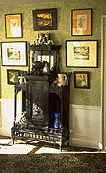

BURROWS STUDIO currently offers the following designs: Samples can be ordered by mail; please contact us via e-mail: merchant@burrows.com, or by phone: (800) 347-1795 for a printed catalog and order form.
Chrysanthemum, English design, c. 1893.Peruvian Lily, English design, c. 1893.
Priory Garden, English design, c. 1880 - 90.
Kensington, English design, c. 1893.
Sandringham, English design, c.1893.
Depden, English design, c. 1880 - 90.
Phillimore Wreath, English design, c. 1893.
Arbella, English design, c. 1890.
Lily and Rose, by George Walton and Robert Graham, Scottish design, c. 1895.
Rossetti, by Aldam Heaton, English design, c. 1884.
Giotto, by Aldam Heaton, English design, c. 1884.
Ginko Leaf, Japanese design interpreted by George Halm, American, c. 1885.
Summer Street Damask, attributed to John Dando Sedding, English design, c. 1885.
Persis Wall, English Design, c. 1880.
Persis Frieze, companion to Persis Wall.
Persis Ceiling, companion to Persis Wall.
Chauncy Frieze, American design, c. 1880 - 90.
Japanese Carp, by Candace Wheeler, American design, c. 1880 - 90.
Lily, by Candace Wheeler, American design, c. 1880 - 90.
The Stag, by C.F.A. Voysey, English design, c. 1896.
The Bird & Poppy, by C.F.A. Voysey, English design, c. 1900.
Japanese Carp, by Candace Wheeler, American design c. 1880 - 90.Lily, by Candace Wheeler, American design c. 1880 - 90.
Nasturtium Leaf, by Candace Wheeler, American design c. 1880 - 90.
Seashell and Ribbon, by Candace Wheeler, American design c. 1880 - 90.
The Bird & Poppy, by C.F.A. Voysey, English design, c. 1900.
Beauport Old Colony print, anonymous Regency design reissued in the early 20th century, and reproduced for the Society for the Preservation of New England Antiquities.
Meadow Lily, c. 1910 design from Come-Packt Furniture Company catalog. America design, woven in Scotland on antique Nottingham lace looms.

Tulip & Lily (body, border and runner); Wilton carpet by William Morris, originally produced nearly continuously from 1875 to the present day.Poppy (body and border); Axminster carpet by William Morris, originally produced from c. 1880 through the 1920's.
Honeysuckle (body and border); Wilton carpet by Henry Dearle for William Morris, originally produced from c. 1880 through the 1920's.
Vine & Pomegranate Ingrain carpet (3-ply, reversible flat weave), by Kate Faulkner for William Morris, originally produced from c. 1880 through the early 20th century. Also suitable for portierres and other requirements for heavy fabric.
Wyandotte Floral (body and border); Wilton carpet, American design from c. 1895.
Other Arts & Crafts Movement Wilton and Axminster carpets are in process of reissue, including designs by C.F.A. Voysey.
 J.R.
Burrows & Company
J.R.
Burrows & Company
P.O. Box 522
Rockland, Massachusetts 02370
E-mail:
merchant@burrows.com
Phone: (800) 347-1795; Phone: (781) 982-1812 Fax: (781) 982-1636